我在海外 | 病毒逼近，冷静面对——三个英国家庭的抗疫准备
原文链接 备份链接 我采访的三个女人和他们的家庭成员，都冷静平和。除了病毒感染的风险，这种前所未遇的几乎全民的收入减少和停顿，对未来不确定的同时，还要应对现实生计和担心财务状况，才是最让人揪心的。 文、图 | 亚 宁 我是一个传统的写作 …

摘要：“我明明是没有工作，为何要比上班还忙呢？”
隔离在家的日子，你会如何度过？
对一些女性来说，她们的回答是：在家也一样忙忙碌碌，和平时没什么分别。
绿色蔷薇社会工作服务中心和尖椒部落发起【疫情中女工的一天| 2020三八国际劳动妇女节图文征集】，收到了不少姐妹的精彩投稿。她们用照片和文字记录下自己平凡又丰富的一天，也记录下那些被忽视的，凝结在柴米油盐、一日三餐背后的辛苦劳动。
照料一大家人的日常。

Δ 天气好的一天，洗了一大家子的衣服。

Δ 趁着孩子都在家，每天多做点好吃的给她们。
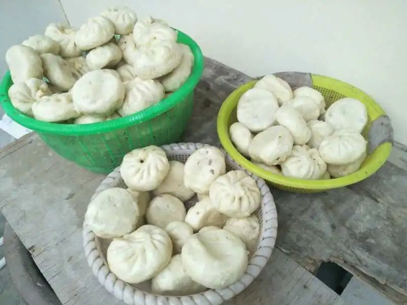
Δ 我和孩子、老公一起包的包子，够吃一段时间了。
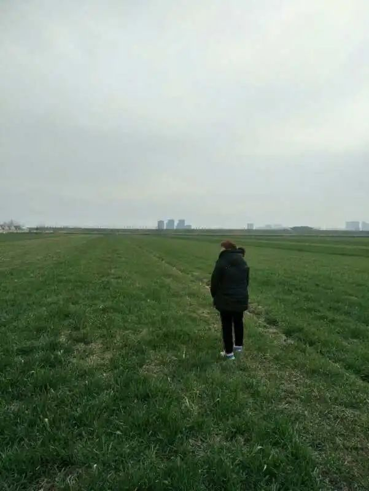
Δ 去地里看看打过药的小麦长得怎么样了。

Δ 阳光特别暖和，我把母亲的被子抱出来晒晒。
享受生活，享受陪伴。

Δ 每天都是阳光唤醒自己，一米阳台的阳光早餐，播放轻音乐，舒缓着每时每刻。
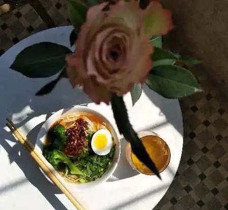
Δ 午餐不想耽误太久，简单点。我需要抓紧时间画画了。
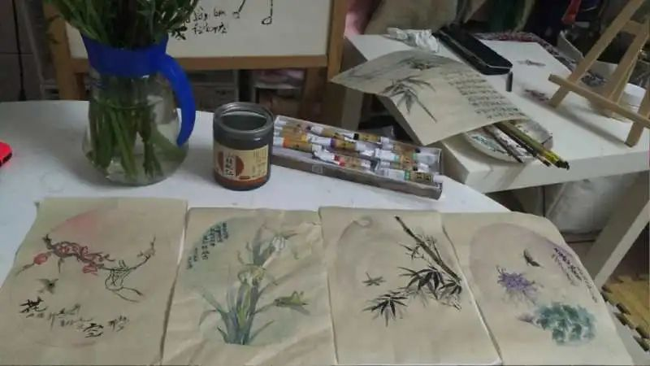
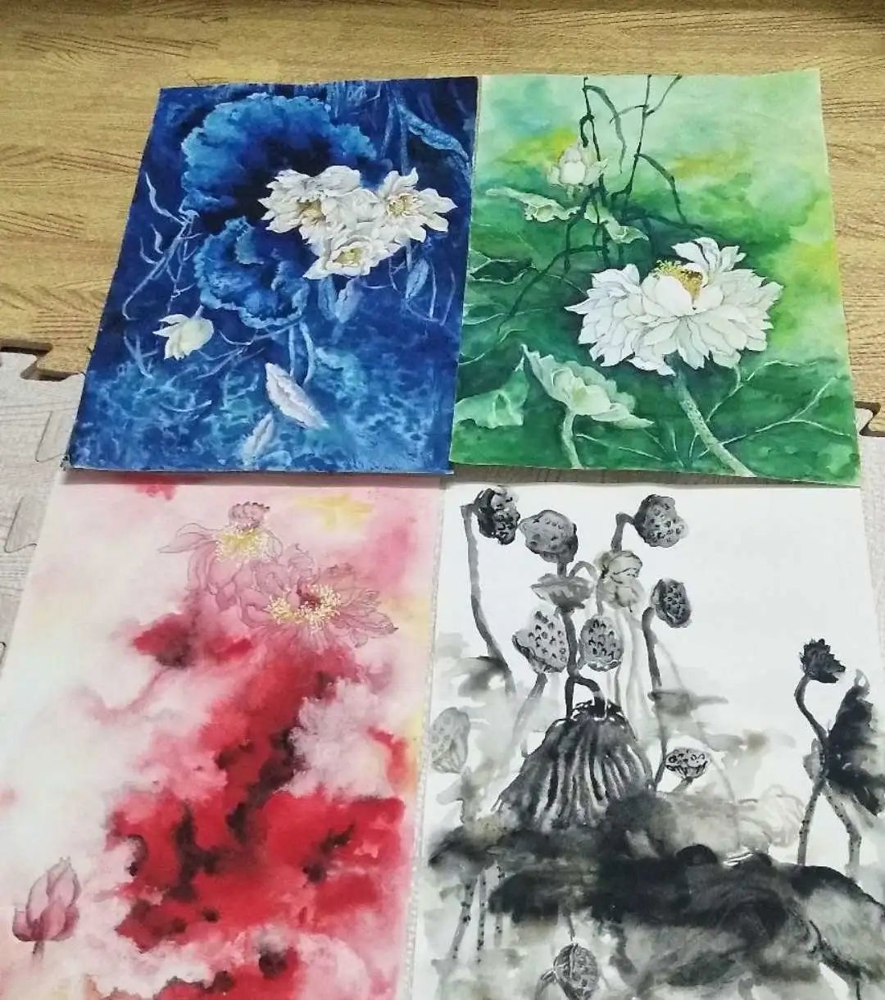
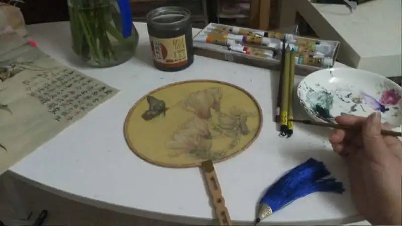
Δ 画了荷花，画了梅兰竹菊，今天还画了第一把团扇，还想吹吹陶埙，还想练练字。唉，时间过得太快了。
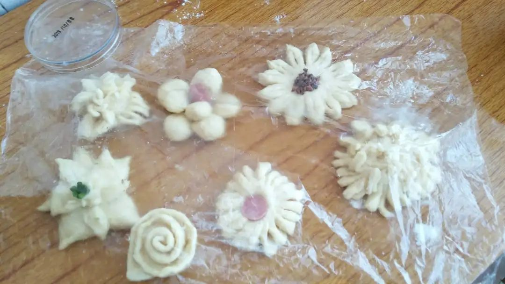


Δ 明天的早点，我也要准备。全民都是神厨，包括我哟。

Δ 女儿下班回来，晚上的火锅走起。
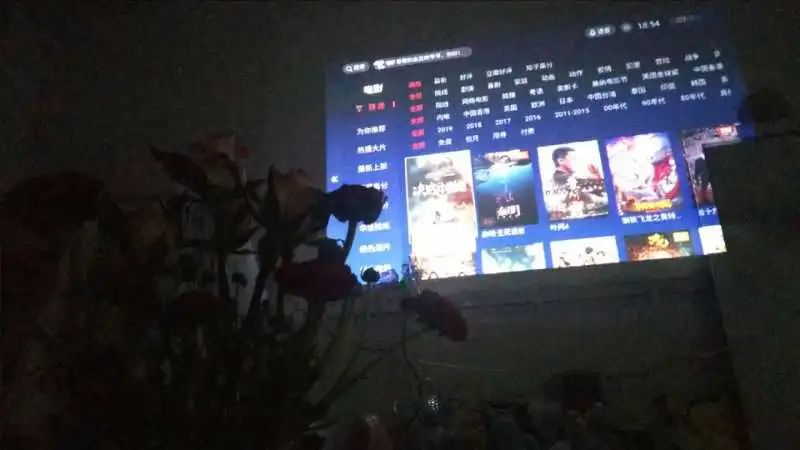
Δ 准备看电影咯，从来没有机会看这么多大片，看完后和女儿交谈各自的感受。能和年轻人讨论时事，交流观念，真是难得的机会，非常享受，非常奇妙。
其实从开始因为疫情新闻天天哭兮兮，再到每天安排满满当当，安安静静享受生活，只是一个心态的问题吧。
不管怎样，春天是一样地到来了，不是吗。
停课，但孩子不能停学。

Δ 早上起来给铭昊煮好早餐。

Δ 给铭昊安排学习计划，停课不停学，在家也能自主学习。

Δ 原本我是一位有工作的妈妈，突如其来的疫情把我的生活打乱，现在我变成了一位失业的妈妈。可是不知道为什么，我明明是没有工作，为何要比上班还忙呢？这就要从我儿子说起。
我的一天确实很忙，早起做早餐给儿子吃，早餐后要给他布置作业，他做作业，我搞卫生、洗衣服，忙完了家务，还得给儿子上课。这是我跟儿子一起做的“学习角”，让他把每天学到的知识写出来，自己贴上去。

Δ 这一刻是亲子活动时间，陪他一起运动，他跳我数，我跳他数。居家运动，身体好，吃饭香，还能长身高。把身体锻炼好，抵抗力也自然提升。
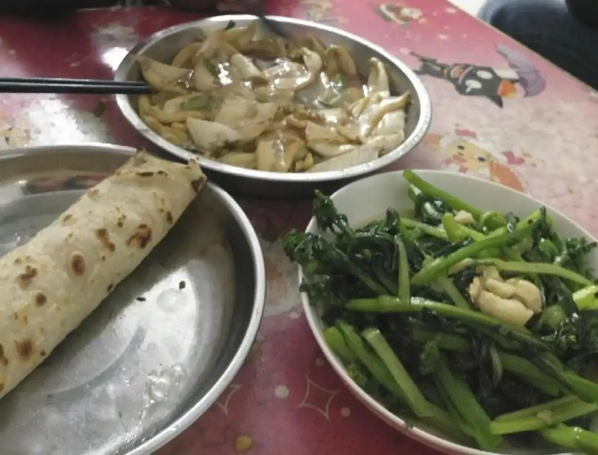
Δ 准备晚餐，等待孩子的爸爸回来一起共享晚饭。

Δ 亲子阅读，陪孩子一起阅读绘本，可以增进母子感情，一天一个好故事，陪伴孩子快乐成长。
不知不觉，一天就这样过了，平凡又简单的幸福。我的一天基本上都是属于孩子的。
全职妈妈的一天。

Δ 真正忙碌的一天是从宝宝醒来那一刻开始。赶在宝宝醒来之前，自己先起床洗漱，做好早餐，把两个小家伙要穿的衣服都准备好。最最糟糕的是，我早餐还没吃完时，两个小家伙同时醒了，这一个早上都得忙上忙下，前前后后地来回跑。
Δ 午饭一般要到下午一点左右才吃得上，喂完哥哥，菜都已经凉了，我只能匆匆忙忙吃一点，填饱肚子就行。然后要哄哥哥（大宝）睡午觉，给妹妹（小宝）做抚触，帮助大脑发育，练习抬头，然后哄妹妹睡觉。
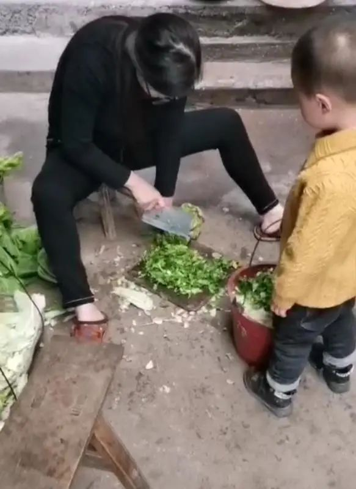
Δ 午觉醒来，该给自家喂养的鸡鸭准备下午茶了，小宝还在睡觉，带着大宝去门口的菜地拔些青菜，剁碎了喂鸡。
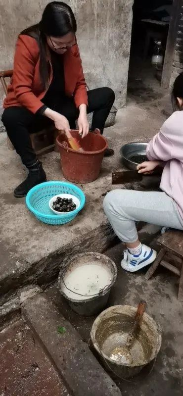
Δ 四点半开始准备晚餐食材：炒田螺。洗田螺是一件麻烦事，要一个一个刷干净。

Δ 晚饭后大概八点钟，开始给两个小家伙洗澡，讲睡前小故事哄他们睡觉。一般到十点半左右，两个宝宝才能都睡着。

Δ 两宝都睡了才有时间去冲凉，把一家子换下来的衣服洗了，然后开始收拾家里，搞卫生，此时已经快十二点了。
一切都做完了，然后……小宝又醒了，该去冲奶粉了……
地里油菜花开得正好。
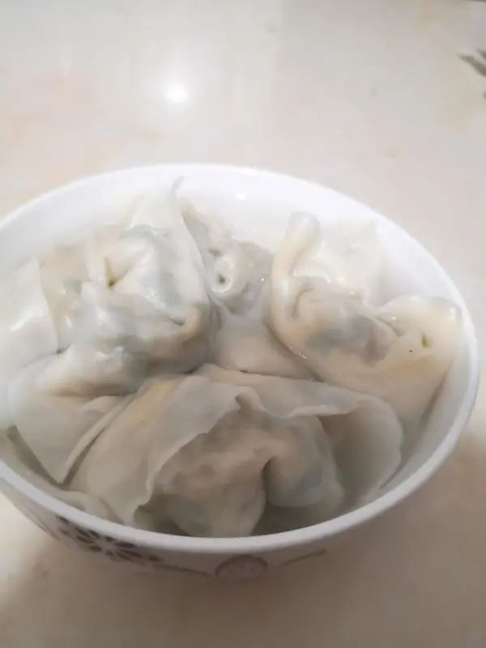
Δ 二月二龙抬头，婆婆说早上要吃饺子。
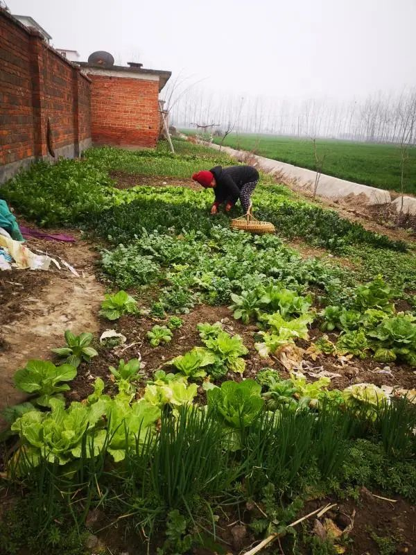
Δ 早上吃完饭已经半上午了。很久不出门了，储存的菜早已经吃完，还好有一片菜地，去地里拔一些菜准备午餐。

Δ 吃完午饭，和婆婆一起去地里捡柴火，晒干后可以拉回去烧锅。
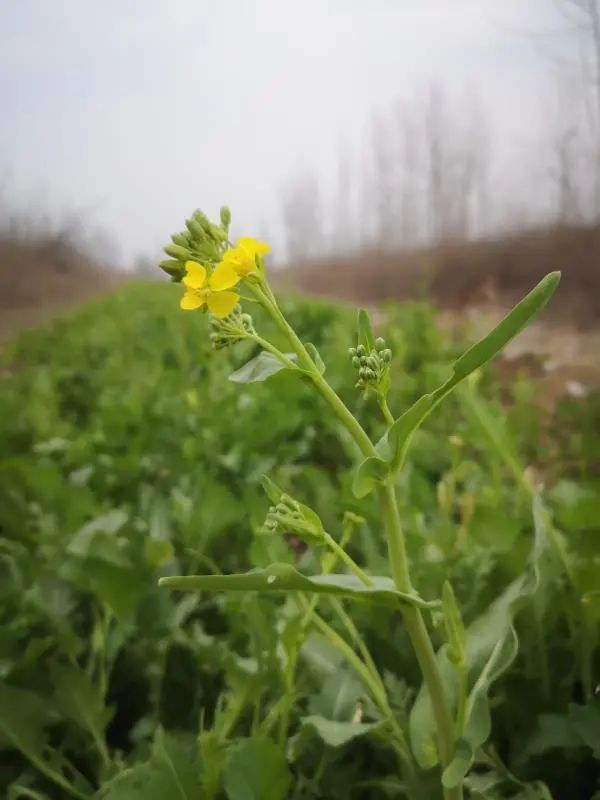
Δ 地里的油菜花很漂亮。
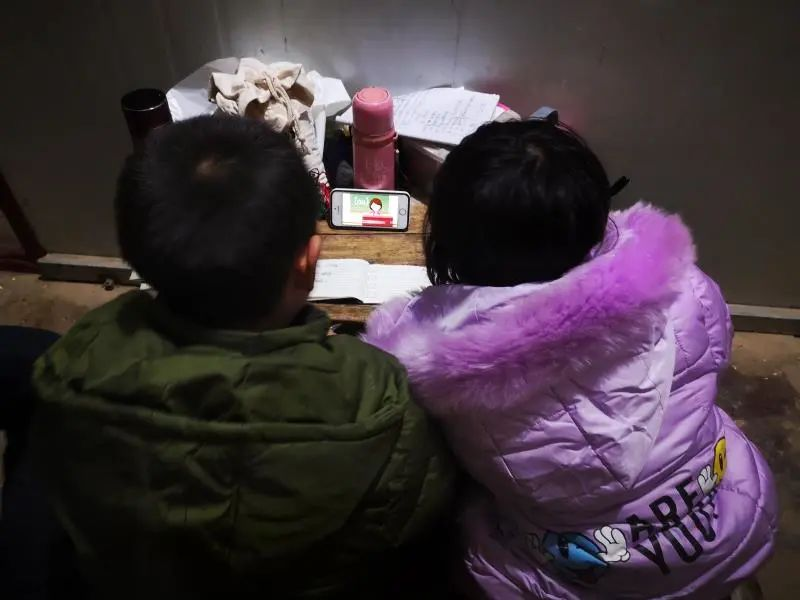
Δ 晚上睡前看侄子侄女在学网课，老公在给Ta们补课。家里如果没有年轻人，老人根本不知道如何看网课。家里没网、没流量，孩子学网课就像看电视一样，你会听见：“这集又演完了。”
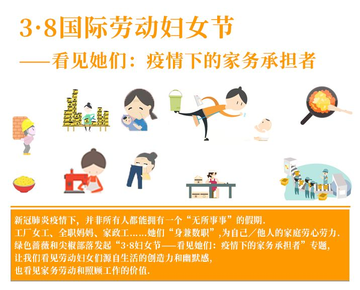


请尊重原创，保护版权
本文为绿色蔷薇社会工作服务中心及尖椒部落合作原创作品。欢迎转载，但请保留本段文字：转载自绿色蔷薇社会工作服务中心及中国女工权益与生活资讯平台尖椒部落（jianjiaobuluo.com）。

文章已于修改
原文链接 备份链接 我采访的三个女人和他们的家庭成员，都冷静平和。除了病毒感染的风险，这种前所未遇的几乎全民的收入减少和停顿，对未来不确定的同时，还要应对现实生计和担心财务状况，才是最让人揪心的。 文、图 | 亚 宁 我是一个传统的写作 …
原文链接 备份链接 这疫情，可得赶快过去 口述者：小梅（化名）/河南信阳籍 打工所在地：北京 编者注：小梅，女，44周岁，中专毕业，河南籍在京务工人员，患有高血压、糖尿病。丈夫做外墙保洁，也兼做临时工，患有腰间盘突出。小梅在一所民办打 …
原文链接 备份链接 【财新网】（记者 周泰来 实习记者 黄晏浩 陈怡帆 邓睦申）新冠疫情下，一些留学英国的中国未成年人留学生无法继续寄宿在校，也很难回国。中国驻英大使刘晓明在北京时间3月18日晚接受央视采访时称，中国在英国有大约1.5万小 …
原文链接 备份链接 在五十多天的隔离里，这不是最好的一天，也不是最坏的一天，这是最典型的一天。 这不是最坏的一天，在五十多天的隔离里。 这不是最好的一天，在五十多天的隔离里。 五十多天往六十天奔了，哪一天解封？还是一个变数。医院还有上万确 …
原文链接 备份链接 本文是协作者在“农民工抗疫救援行动”中，针对困境农民工家庭开展的个案访谈之一，旨在快速识别疫情中的脆弱人群及其需求，为疫情防控和救援工作提供参考，我们整理出来与你分享。 疫情下的深呼吸 ——困境农民工家庭个案实录（十 …